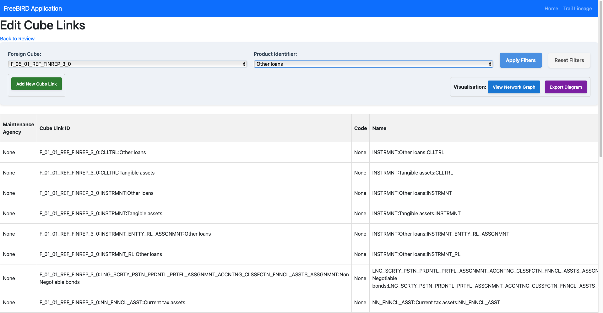

Cube Links View and Edit User Guide
Overview
The Cube Links View and Edit interface is a powerful tool within the FreeBIRD Application that enables users to create, manage, and visualize relationships between data cubes and their components. This feature provides both tabular and graphical representations of how data flows from source cubes through various transformations to target cubes, making it essential for understanding and maintaining complex data relationships in the regulatory reporting framework.

Interface Components
Header Section
Navigation Bar
- FreeBIRD Application: Application title in the top-left corner
- Home: Quick navigation to return to the main dashboard
- Trail Lineage: Access to data lineage tracking and audit capabilities
- Back to Review: Return link to the previous review screen
Main Control Panel
Selection Filters
Foreign Cube Selector
- Dropdown menu: Select the source cube for viewing/editing links
- Example:
F0501REFFINREP30 - Lists all available foreign cubes in the system
Product Identifier Selector
- Dropdown menu: Filter cube links by product type
- Example:
Other loans - Dynamically updates based on selected foreign cube
Filter Controls (Top Right)
- Apply Filters (Blue button): Apply selected filter criteria to the data grid
- Reset Filters (Gray button): Clear all applied filters and return to default view
Action Buttons
Data Management
- Add New Cube Link (Green button): Opens dialog to create new cube link relationships
Visualization Options
- View Network Graph (Blue button): Display graphical representation of cube relationships
- Export Diagram (Purple button): Export the network diagram to various formats
Data Grid
The main data grid displays cube link information with the following columns:
Grid Columns
- Maintenance Agency: Entity responsible for maintaining the cube link (typically "None")
- Cube Link ID: Unique identifier for each cube link relationship
- Format:
ForeignCube::TargetItem - Example:
F0101REFFINREP30::CLLTRL::Other loans - Code: Classification code (typically "None")
- Name: Descriptive name of the link relationship
- Format:
INSTRUMENT:Description:TARGET - Example:
INSTRMNT:Other loans:CLLTRL
Network Graph Visualization

Understanding the Visual Legend
The network graph uses specific shapes and colors to represent different components:
Node Types
- Source Cube (Orange cylinder): The originating data cube
- Source Item (Blue rectangle): Individual data elements from the source
- Target Item (Green diamond): Transformation or mapping points
- Target Cube (Yellow cylinder): The destination data cube
Data Flow
- Arrows indicate the direction of data flow
- Lines connect related components
- Hierarchical layout shows transformation stages
Reading the Network Diagram
Example: F0501REFFINREP30Otherloans
The diagram shows:
- Left Panel (INSTRMNT):
- Source node (orange circle) labeled "INSTRMNT"
- Branches to two blue rectangles:
TYPINSTRMNT� connects to green diamondTYPINSTRMNTRPYMNTRGHTS� connects to green diamondRPYMNTRGHTS
- Right Panel (F0501REFFINREP30):
- Shows the target cube structure
- Green diamonds represent mapped target items
- Connections flow into the yellow target cube
- Bottom Panel (PRTY):
- Additional relationship layer
- Shows party-related mappings
Key Functions
Creating a New Cube Link
- Click Add New Cube Link button
- In the dialog:
- Select source cube from dropdown
- Choose source items to link
- Define target items for mapping
- Specify transformation rules if applicable
- Click Save to create the link
- The new link appears in the data grid
Viewing Cube Link Details
- Select a row in the data grid
- View complete link information including:
- Full path from source to target
- Intermediate transformations
- Associated metadata
Filtering Cube Links
- Use the Foreign Cube dropdown to filter by source
- Use the Product Identifier to filter by product type
- Click Apply Filters to update the view
- Use Reset Filters to clear all filters
Visualizing Relationships
- Select cube links in the grid (or use filters)
- Click View Network Graph
- The network diagram opens in a modal window:
- Pan by clicking and dragging the canvas
- Zoom using mouse wheel or controls
- Click nodes for additional details
- Click Close (red button) to exit the visualization
Exporting Diagrams
- With network graph open, click Export Diagram
- Choose export format:
- PNG for images
- SVG for scalable graphics
- PDF for documentation
- Select destination and save
Understanding Cube Link Relationships
Hierarchical Structure
Cube links follow a hierarchical pattern:
- Level 1: Source cube definition
- Level 2: Source items and attributes
- Level 3: Transformation/mapping layer
- Level 4: Target items and attributes
- Level 5: Target cube destination
Link Naming Convention
Links follow the pattern:
[SourceCube]::[TransformationType]::[TargetDescription]
Example breakdown:
F0101REFFINREP30- Source cube identifierINSTRMNT- Transformation type (Instrument)Tangible assets- Target description
Best Practices
Data Management
- Consistent Naming: Use clear, descriptive names for cube links
- Documentation: Export diagrams when making significant changes
- Regular Review: Periodically review links for accuracy
- Testing: Validate links with sample data before production use
Visualization Tips
- Start Simple: Begin with filtered views of specific relationships
- Use Colors: Leverage the color coding to quickly identify component types
- Export Key Diagrams: Save important relationship diagrams for documentation
- Layer Analysis: Review each hierarchical level separately for complex cubes
Performance Optimization
- Filter First: Apply filters before generating large network graphs
- Batch Operations: Group related cube link creations
- Regular Cleanup: Remove obsolete or duplicate links
Common Use Cases
Regulatory Reporting Setup
- Map source system cubes to regulatory templates
- Define transformation rules for data aggregation
- Visualize complete data flow for audit purposes
Data Quality Validation
- Trace data lineage through cube links
- Identify potential gaps in mappings
- Verify completeness of transformations
Change Impact Analysis
- View all relationships for a specific cube
- Assess impact of proposed changes
- Document current state before modifications
Troubleshooting
Common Issues
- Missing Cube Links:
- Verify filter settings
- Check user permissions
- Refresh the page
- Visualization Not Loading:
- Reduce data set with filters
- Check browser compatibility
- Clear browser cache
- Cannot Create New Link:
- Verify source and target cubes exist
- Check for duplicate links
- Ensure proper permissions
- Export Failures:
- Check available disk space
- Verify export permissions
- Try different format
Data Validation
The system automatically validates:
- Circular reference prevention
- Duplicate link detection
- Required field completion
- Data type compatibility
Advanced Features
Multi-Level Mappings
- Create complex transformation chains
- Define conditional mappings
- Implement business rules in links
Bulk Operations
- Import cube links from templates
- Export link definitions for backup
- Mass update link properties
Integration Points
- Connect with data quality rules
- Link to validation frameworks
- Interface with reporting engines
Tips for Efficient Usage
- Keyboard Shortcuts: Learn available shortcuts for faster navigation
- Template Usage: Create template links for common patterns
- Regular Exports: Maintain diagram library for documentation
- Collaborative Review: Share network graphs with stakeholders
- Version Tracking: Document changes to critical cube links
Security and Governance
- All cube link modifications are logged
- Changes tracked in trail lineage
- Role-based access control for editing
- Approval workflow for critical links